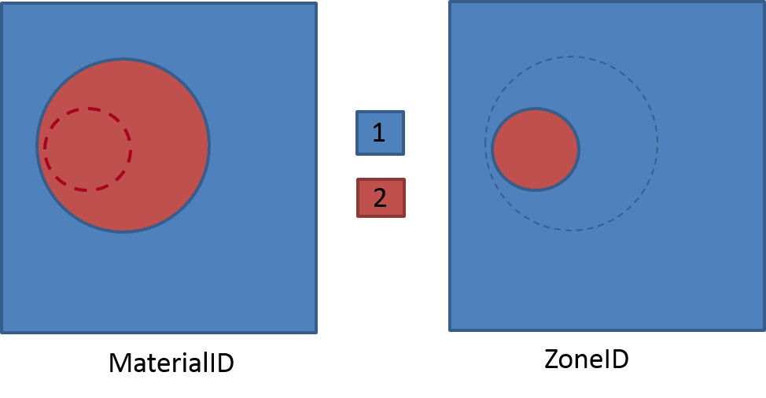
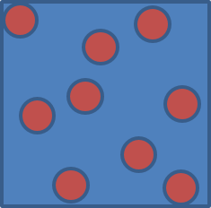

A heterogeneous Unit-cell consists of one (or more) Material, and each Material consists of one (or more) Zone. They are defined as follows:
Note
The description of a unit-cell is often not unique (see example below). If so:
AMITEX_FFTP needs two integer fields (or one if the other is a homogeneous field of ‘ones’) as inputs, each one representing the spatial distribution of materials and zones within materials. This example considers a unit-cell with two materials, and one material is devided into two zones (same behavior law but with different coefficients). The corresponding MaterialID and ZoneID fields are represented here: |
 |
Assuming a composite material with elastic isotropic matrix and inclusions, the N inclusions having the same elastic coefficients, AMITEX_FFTP is able to take into account the FIVE following descriptions:
|
 |
Depending on the required outputs, the recommanded descriptions are:
Once installed (see Installation), to use AMITEX_FFTP, you must set the environment variable AMITEX_PATH, PATH (and LD_LIBRARY_PATH since v8.18.x).
For example in a file env_amitex.sh:
#!/bin/bash
export AMITEX_PATH=(amitex)
export PATH=$AMITEX_PATH/libAmitex/bin:$PATH
export LD_LIBRARY_PATH=$AMITEX_PATH/libAmitex/lib:$LD_LIBRARY_PATH
And then
$ source env_amitex.sh
If you have compiled GCC and/or openMPI and/or fftw3, and used them for compiling AMITEX_FFTP (see GCC, openMPI, fftw, mfront), be sure that their respectives bin and lib (or lib64) folders are added to the PATH and LD_LIBRARY_PATH variables in the env_amitex.sh
Interactively or within a batch script (for the job manager available on your machine), a simulation is launched with one of the following command lines
MATEVTK="path_to/materialID.vtk"
ZONEVTK="path_to/zoneID.vtk"
MATEXML="path_to/material.xml"
LOADXML="path_to/loading.xml"
ALGOXML="path_to/algorithm.xml"
RESDIR="path_to/results/
#WARNING : you must create the folder "results" before launching amitex_fftp
0. help
mpirun amitex_fftp -help ! OR SIMPLY : amitex_fftp -help
1. General case
mpirun amitex_fftp -nm $MATEVTK -nz $ZONEVTK -m $MATEXML -c $LOADXML -a $ALGOXML -s $RESDIR/output_file
2. One material (assumes materialID.vtk full of 1)
mpirun amitex_fftp -nz $ZONEVTK -m $MATEXML -c $LOADXML -a $ALGOXML -s $RESDIR/output_file
3. One zone per material (assumes zoneID.vtk full of 1)
mpirun amitex_fftp -nm $MATEVTK -m $MATEXML -c $LOADXML -a $ALGOXML -s $RESDIR/output_file
4. One material with one zone per voxel (assumes zoneID.vtk varying from 1 to the number of voxels) with dx=dy=dz=1.
mpirun amitex_fftp -m $MATEXML -c $LOADXML -a $ALGOXML -NX nx -NY ny -NZ nz -s $RESDIR/output_file
5. One material with one zone per voxel (assumes zoneID.vtk varying from 1 to the number of voxels)
mpirun amitex_fftp -m $MATEXML -c $LOADXML -a $ALGOXML -NX nx -NY ny -NZ nz -DX dx -DY dy -DZ dz -s $RESDIR/output_file
Depending on your MPI version and/or installation, you may have to specify explicitely the number of processes and replace mpirun by mpirun -np number_of_processes.
The five possible command lines listed above correspond to the five following cases :
In the example above :